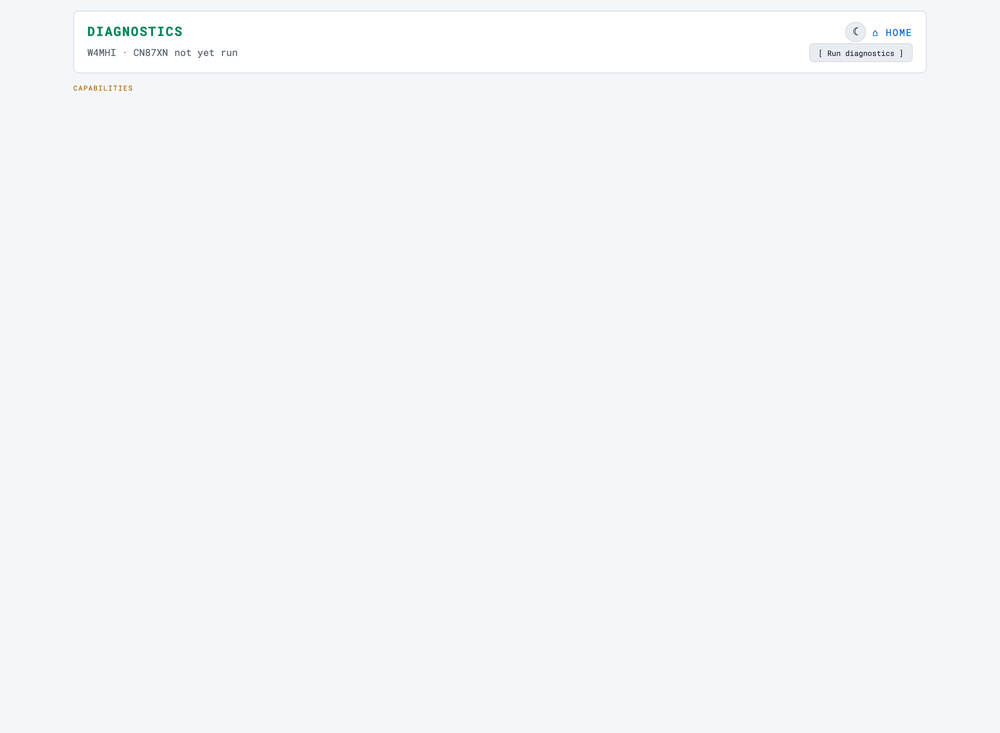

Diagnostics
The browser sweep — one button, six capabilities, and a ranked list of what to fix first
The OASIS Diagnostic page — SYSOP → OASIS
Diagnostic on the dashboard nav, at
server/system/diagnostic.html — runs the station’s whole
health sweep in one shot and lays the result out as capabilities first, individual
checks second. It is the page you open before you drive to a site, not a monitor you
leave running.

This is not scripts/doctor.py. Both drive the
same check registry, but doctor is the headless CLI
— exit codes, --json, a remote --host, CI. This is the
browser view of the same sweep, with the capability rollup, the FIX NOW ranking and
the deep-links into Setup that a terminal cannot give you. One real difference in what
they run is noted below.
Run diagnostics
There is one button, top right of the header row: [ Run diagnostics ].
It calls GET /api/diagnostics, which runs every registered check and
returns ran_at, a summary, the capability rollups, the ranked
fix_now, and the five check groups.
The page never runs on its own and never polls. That is deliberate:
the sweep makes real probes — port connections, HTTP calls back into the server,
systemctl queries, disk stats — and a page that repeated all of
that on a timer would be a load generator pointed at a Pi. Nothing happens until you
click. The header carries the station callsign and grid beside the run time, so a
screenshot of the page identifies which station it came from.
The cached, greyed-out render
This is the single most confusing thing on the page, so read it
once and never be caught by it. When you open Diagnostics, it immediately
renders the last sweep from localStorage — complete with
tiles, counters and check rows — but drawn dimmed and desaturated,
with a yellow banner across the top reading “Showing last run <date and
time> — click Run diagnostics to refresh.” Nothing on that screen
was measured today. A service you fixed an hour ago is still red; a service that died
ten minutes ago is still green.
The behaviour is right — walking up to a station and instantly seeing its last-known state beats staring at an empty page — but the greyscale is the only visual difference between a stale render and a live one, and on a sunny screen in the field it is easy to miss. If the yellow banner is showing, you are looking at history. Click Run; the banner disappears, full colour comes back, and the timestamp beside the callsign updates.
A run that fails leaves the page as it was and reports the reason where the timestamp
goes (run failed: …) rather than blanking a screen you may still
need to read.
Capability tiles
Above everything sit six tiles — the question “can this station still do the thing?”, which is not the same as “is every check green?”. Click a tile to expand the individual checks behind it.
| Tile | Label | Member checks |
|---|---|---|
ACCESS | Core / Access | server, station_identity, webssh |
APRS_RX | APRS Receive | rtl_sdr, digirig, dra_pi, graywolf, graywolf_api, aprs_feed |
WINLINK | Winlink | pat |
POSITION | Position / GPS | gps |
POWER | Power / Health | power, temp, cpu, disk, cooling_hat |
REFERENCE | Reference Data | fcc, repeaterbook, kiwix, forms, maps |
The rollup rule, and why the counters look contradictory
Each check is registered as critical or not, and the rollup is deterministic:
- fail if any critical member check failed.
- otherwise warn if any member — critical or not — failed or warned. A non-critical failure degrades the capability rather than killing it.
- otherwise ok.
And in the summary line a capability counts as DOWN only when its rollup is
fail. A warn still counts as UP,
because the capability is degraded but functioning. That is why
“1 problem · 0 warnings · 20 OK — 6 capabilities UP
· 0 DOWN” is a perfectly consistent reading and not a bug: a
non-critical check failed, the capability it belongs to degraded to
warn, and warn is up. RepeaterBook missing is a real problem worth
showing, and it does not take Reference Data off the air.
FIX NOW
Directly under the tiles, a red hero banner appears when anything failed. It names
exactly one check — the highest-impact failure — with its
badge, its consequence line, and a → Setup link where one exists.
The ranking is critical failures first, then by group in the order
CORE, HARDWARE, SERVICES, SYSTEM, DATA. If nothing failed, the banner
is not rendered at all.
It exists because a wall of red is paralysing and most of it is downstream. Fix the one thing it names, run again, and see what is actually left.
The summary counters
One line under FIX NOW, in the form:
2 problems · 1 warning · 18 OK — 5 capabilities UP · 1 DOWNThe first three are check counts; the last two are capability rollups under the rule above. Singular and plural are handled, so 1 problem and 1 capability UP read correctly.
The five groups
Below the summary, every check again — this time grouped by where it lives rather than by what it enables. Within each group, failures float to the top, then warnings, then the passes.
| Group | Covers |
|---|---|
| CORE | The server itself, station identity, Web SSH. |
| HARDWARE | RTL-SDR, DigiRig, DRA-Pi, GPS. |
| SERVICES | GrayWolf and its history API, Pat, the APRS feed. |
| SYSTEM | Power, temperature, CPU, disk, cooling fan. |
| DATA | FCC database, map tiles, Kiwix, RepeaterBook, ICS forms, Winlink forms. |
The checks
Twenty-two checks are registered. The browser page runs twenty-one of
them: winlink_forms is registered at backlog tier and
is skipped unless a caller explicitly asks for backlog checks — which
doctor.py does and this page does not. That is the one real difference
between what the two surfaces run, and it is worth knowing before you go hunting for a
row that is not there.
| Check | Group | Capability | Critical |
|---|---|---|---|
| OASIS Server | CORE | ACCESS | yes |
| Station Identity | CORE | ACCESS | yes |
| Web SSH (ttyd) | CORE | ACCESS | no |
| RTL-SDR + APRS Audio Feed | HARDWARE | APRS_RX | yes |
| DigiRig (USB-Serial PTT) | HARDWARE | APRS_RX | no |
| DRA-Pi (GrayWolf Audio HAT) | HARDWARE | APRS_RX | no |
| GPS | HARDWARE | POSITION | yes |
| GrayWolf APRS | SERVICES | APRS_RX | yes |
| GrayWolf APRS History API | SERVICES | APRS_RX | no |
| Winlink (Pat) | SERVICES | WINLINK | yes |
| APRS Feed | SERVICES | APRS_RX | yes |
| Power | SYSTEM | POWER | yes |
| CPU Temperature | SYSTEM | POWER | no |
| CPU Load | SYSTEM | POWER | no |
| Disk Space | SYSTEM | POWER | no |
| Cooling fan | SYSTEM | POWER | no |
| FCC Callsign Database | DATA | REFERENCE | no |
| Map Tiles (PMTiles) | DATA | REFERENCE | no |
| Kiwix (Offline Wikipedia) | DATA | REFERENCE | no |
| RepeaterBook | DATA | REFERENCE | no |
| ICS Forms | DATA | REFERENCE | no |
| Winlink Forms (Offline Pages) | DATA | REFERENCE | no — backlog tier; not run by this page |
Badges
Every row carries a short uppercase badge beside its name, coloured by status. The vocabulary is per-check, not global — it says what that check found:
| Check | Badges you will see |
|---|---|
| OASIS Server | RUNNING · DEV SERVER (up, but not under gunicorn) · DOWN |
| Station Identity | SET · PARTIAL (callsign, no locator) · UNSET |
| Disk Space | OK · LOW · CRITICAL · N/A |
| Power | OK · PAST (a past undervolt event) · UNDERVOLT · N/A |
| CPU Temperature | OK · WARM · HOT · N/A |
| APRS Feed | LIVE · IDLE · DOWN |
| GrayWolf / Kiwix / Pat | UP · STOPPED · NOT INSTALLED |
| FCC Callsign Database | READY · NOT BUILT |
| Map Tiles | READY · RESTART · N/A |
| any check | ERROR — the check itself raised. One bad check is caught and reported rather than sinking the whole sweep. |
Reading a failed row
A failing row grows two things a passing row does not have:
- A red “breaks” line in plain language, saying what this failure costs you rather than restating the fault. “No identity — beacons/positions are anonymous.” “The OASIS web interface is completely unreachable — no station functions work.” It is there so you can triage on consequence, not on which line happens to be reddest.
- A
→ Setupdeep-link where a fix exists in the browser — typically into/server/system/setup.html, and for identity straight to its#stationsection. Not every failure has one; a stopped systemd unit is fixed elsewhere.
Both are shown only on fail. A warning tells you its detail and
leaves it at that.
Four states, not three
Checks report ok, warn or fail. The page
renders a fourth, unknown — anything that is none
of those three, drawn with a neutral border and an ellipsis glyph instead of a tick,
warning triangle or cross. You should not normally see it: it is the honest render for
a status the front end does not recognise, which is what a payload from a newer or
older server would produce. Seeing unknown rows means the page and the
server disagree about the vocabulary — hard-refresh, and if it persists, the
browser is holding a cached script from a different build.
Troubleshooting
| Symptom | Cause & fix |
|---|---|
| Everything looks grey and washed out | You are looking at the cached last run. Click Run diagnostics. |
| “1 problem” but all six capabilities are UP | Correct. A non-critical check failed, so its capability degraded to
warn — and warn counts as up. Expand the tile to see which member
it was. |
| The run button spins and then reports a failure | The sweep makes localhost HTTP calls back into the same Flask process, so it needs a
threaded worker. If the server is running single-threaded the request can stall —
start it the supported way (scripts/start-server.sh / ./start.sh). |
| A row you expected is not there | Only winlink_forms is deliberately absent (backlog tier). Anything else
missing means the check raised before it could report, which shows as an
ERROR badge rather than vanishing. |
This page and doctor.py disagree |
They share the registry, so a difference is usually a stale browser — hard-refresh. doctor is the headless source of truth, and it alone includes the backlog-tier check. |